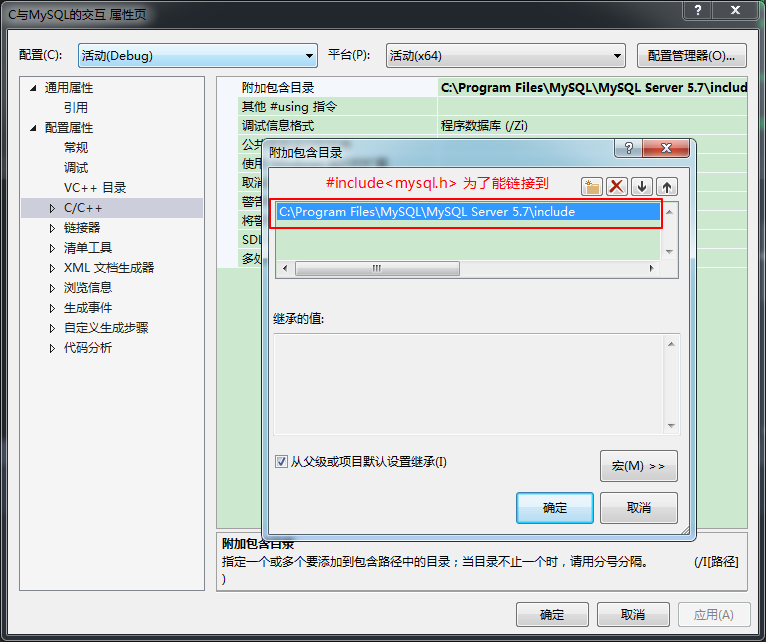
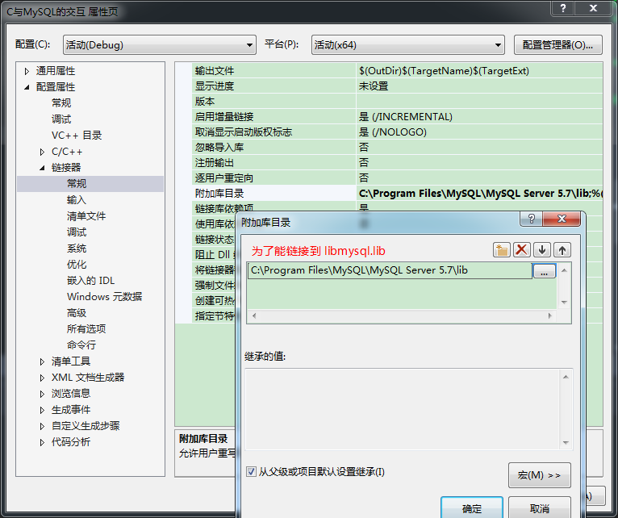
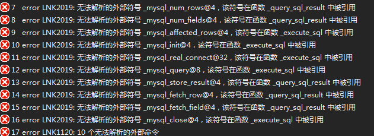
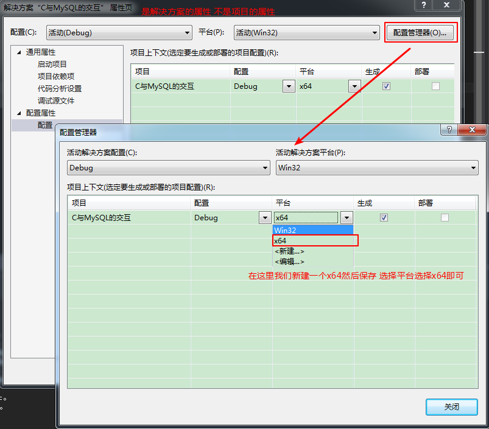
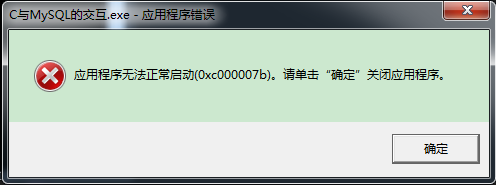

首先附上百度文库的链接
c语言连接mysql数据库的实现方法
- 首先要在项目下修改属性


这样就设置好了 然后进行代码的书写 写完之后我们编译运行 结果会报一大堆错误

依照下面改终于还是改好了没有报错了

c++ 链接mysql：error LNK2019: 无法解析的外部符号
本以为终于好了 结果又来一个报错

把安装路径下的MySQL Server 5.7\lib的libmysql.dll 放在x64的项目工程里和exe一个目录下即可解决问题
正确解决 应用程序无法正常启动（0xc000007b）的问题
然后就可以使用C脚本进行对数据库的操作了
附MySQL的API接口：
| API | 作用 |
| — | —- ||
| mysql_affected_rows() | 返回被最新的UPDATE, DELETE或INSERT查询影响的行数 |
| mysql_close() | 关闭一个服务器连接 |
| mysql_connect() | 连接一个MySQL服务器。该函数不推荐；使用mysql_real_connect()代替 |
| mysql_change_user() | 改变在一个打开的连接上的用户和数据库 |
| mysql_create_db() | 创建一个数据库。该函数不推荐；而使用SQL命令CREATE DATABASE |
| mysql_data_seek() | 在一个查询结果集合中搜寻一任意行 |
| mysql_debug() | 用给定字符串做一个DBUG_PUSH |
| mysql_drop_db() | 抛弃一个数据库。该函数不推荐；而使用SQL命令DROP DATABASE |
| mysql_dump_debug_info() | 让服务器将调试信息写入日志文件 |
| mysql_eof() | 确定是否已经读到一个结果集合的最后一行。这功能被反对; mysql_errno()或mysql_error()可以相反被使用 |
| mysql_errno() | 返回最近被调用的MySQL函数的出错编号 |
| mysql_error() | 返回最近被调用的MySQL函数的出错消息 |
| mysql_escape_string() | 用在SQL语句中的字符串的转义特殊字符 |
| mysql_fetch_field() | 返回下一个表字段的类型 |
| mysql_fetch_field_direct () | 返回一个表字段的类型，给出一个字段编号 |
| mysql_fetch_fields() | 返回一个所有字段结构的数组 |
| mysql_fetch_lengths() | 返回当前行中所有列的长度 |
| mysql_fetch_row() | 从结果集合中取得下一行 |
| mysql_field_seek() | 把列光标放在一个指定的列上 |
| mysql_field_count() | 返回最近查询的结果列的数量 |
| mysql_field_tell() | 返回用于最后一个mysql_fetch_field()的字段光标的位置 |
| mysql_free_result() | 释放一个结果集合使用的内存 |
| mysql_get_client_info() | 返回客户版本信息 |
| mysql_get_host_info() | 返回一个描述连接的字符串 |
| mysql_get_proto_info() | 返回连接使用的协议版本 |
| mysql_get_server_info() | 返回服务器版本号 |
| mysql_info() | 返回关于最近执行得查询的信息 |
| mysql_init() | 获得或初始化一个MYSQL结构 |
| mysql_insert_id() | 返回有前一个查询为一个AUTO_INCREMENT列生成的ID |
| mysql_kill() | 杀死一个给定的线程 |
| mysql_list_dbs() | 返回匹配一个简单的正则表达式的数据库名 |
| mysql_list_fields() | 返回匹配一个简单的正则表达式的列名 |
| mysql_list_processes() | 返回当前服务器线程的一张表 |
| mysql_list_tables() | 返回匹配一个简单的正则表达式的表名 |
| mysql_num_fields() | 返回一个结果集合重的列的数量 |
| mysql_num_rows() | 返回一个结果集合中的行的数量 |
| mysql_options() | 设置对mysql_connect()的连接选项 |
| mysql_ping() | 检查对服务器的连接是否正在工作，必要时重新连接 |
| mysql_query() | 执行指定为一个空结尾的字符串的SQL查询 |
| mysql_real_connect() | 连接一个MySQL服务器 |
| mysql_real_query() | 执行指定为带计数的字符串的SQL查询 |
| mysql_reload() | 告诉服务器重装授权表 |
| mysql_row_seek() | 搜索在结果集合中的行，使用从mysql_row_tell()返回的值 |
| mysql_row_tell() | 返回行光标位置 |
| mysql_select_db() | 连接一个数据库 |
| mysql_shutdown() | 关掉数据库服务器 |
| mysql_stat() | 返回作为字符串的服务器状态 |
| mysql_store_result() | 检索一个完整的结果集合给客户 |
| mysql_thread_id() | 返回当前线程的ID |
| mysql_use_result() | 初始化一个一行一行地结果集合的检索 |
C++ 连接Mysql的两种方法–ADO/Mysql api
查看mysql数据库是否存在某张表及某张表是否存在某个字段
附上本次例子的代码
C_interaction_MySQL.h
1 | //C语言与MySQL数据库的交互 |
C_interaction_MySQL.c
1 |
|
main.c
1 |
|
本次项目github.rar)